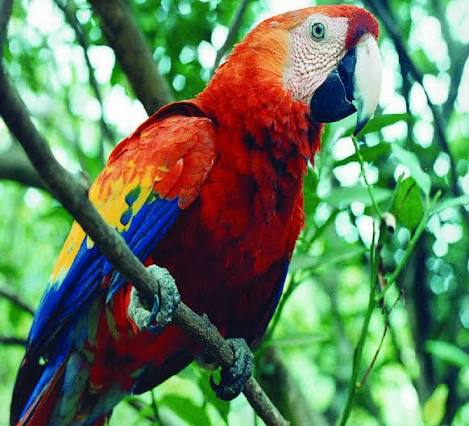
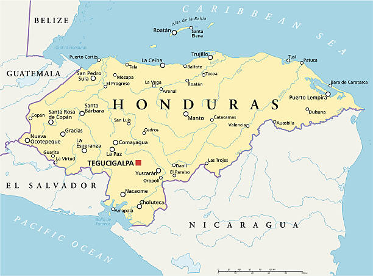
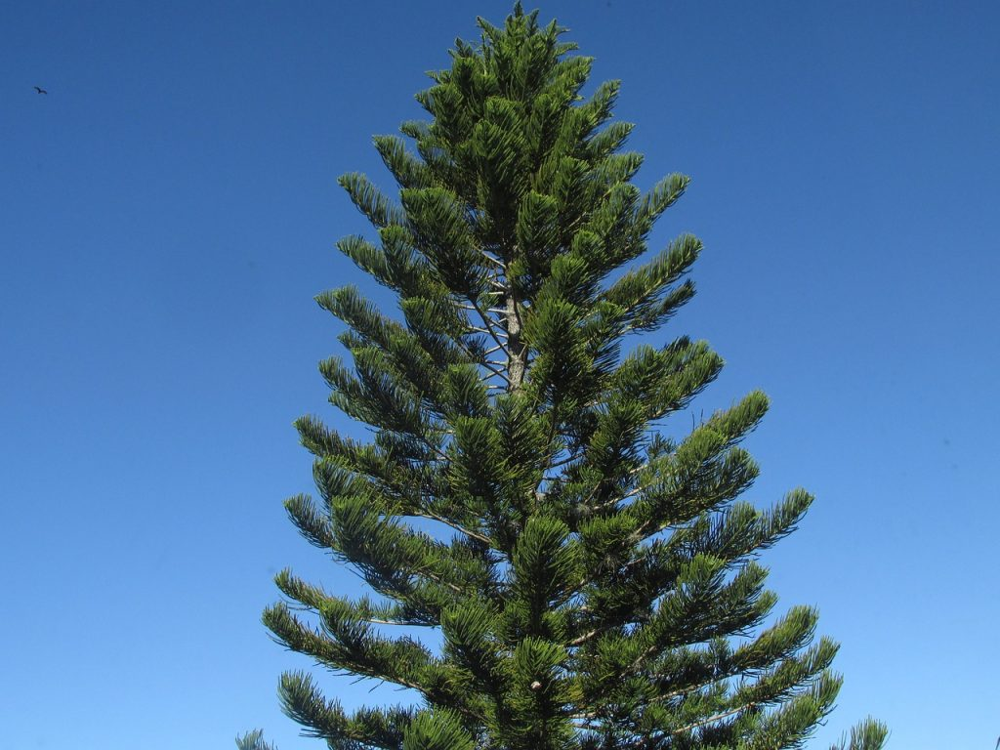
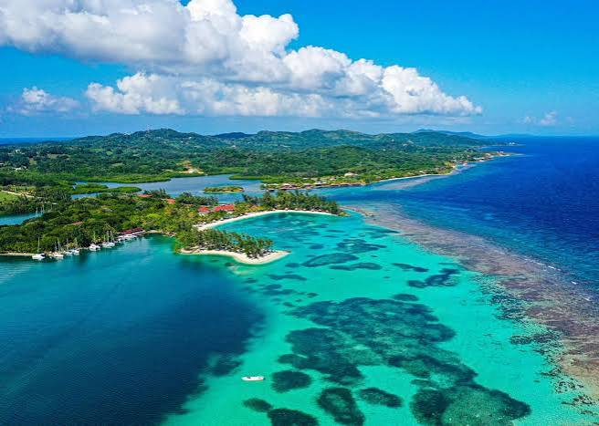
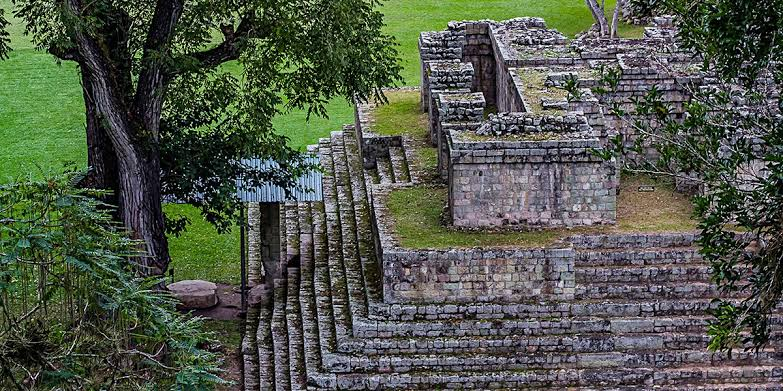

La Guara Roja

Ave nacional de la familia de los loros, caracterizada por su plumaje rojo, azul y amarillo.

Honduras cuenta con una extensión de 112,492 km² y está dividida en 18 departamentos, con amplias áreas montañosas y selva tropical.

Ave nacional de la familia de los loros, caracterizada por su plumaje rojo, azul y amarillo.

Árbol nacional que representa la abundancia forestal y los recursos naturales del país.

Isla paradisíaca del Caribe famosa por sus arrecifes de coral e intensas aguas cristalinas.

Sitio arqueológico Maya reconocido por sus detalladas estelas y jeroglíficos tallados.